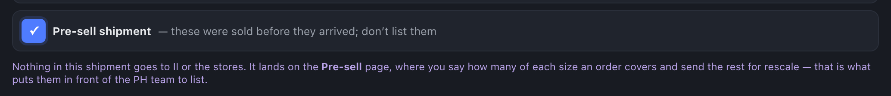
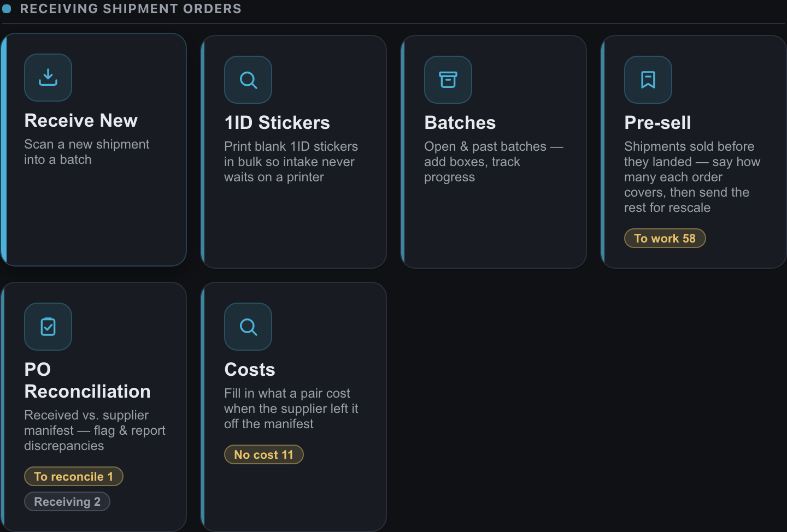
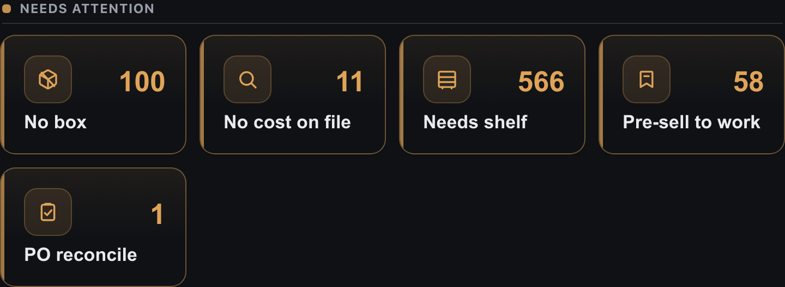
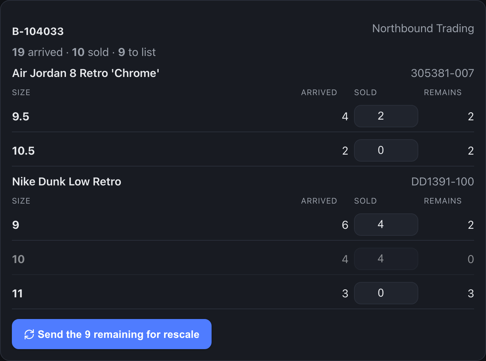
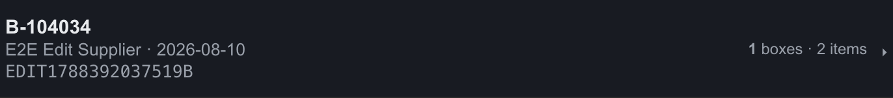

Some shipments are already spoken for before the boxes arrive. Those pairs must not be listed — offering one would sell a pair that belongs to somebody else’s order. But the extra pairs on the same shipment are ordinary stock and do need listing. You are the one who says which is which.
On the Receiving screen, under the tracking number, tick Pre-sell shipment before you start scanning.

Nothing about intake changes. Same scanning, same 1ID stickers, same boxes, same review, same issues. Shelve the pairs as normal — they are real stock sitting on your shelves and they still need a location.
The card sits with Receiving Shipment Orders. The badge counts the pairs still waiting for an answer.

When any are waiting it also appears at the top of the screen under Needs attention.

Each shipment is listed shoe by shoe, size by size. For every size, type how many of them an order covers. Remains updates as you go — that is what will be released for listing.

| If you want to… | Do this |
|---|---|
| Count a row | Type the number in the Sold box and press Tab or Enter. Best when a whole size run is spoken for. |
| Name one exact pair | Scan its 1ID into the box at the top of the page. Use this when a specific pair is the one that sold. |
| Undo | Type a smaller number. The extra pairs are handed straight back and become ordinary stock again. |
When the counts are right, press Send the N remaining for rescale. Those pairs go onto the PH team’s Rescale Stock worklist, where they are priced and listed to II and the stores.
The pair has not left the building yet.
| State | What it means |
|---|---|
| Pre-sold | An order covers this pair. It is still on your shelf and has not shipped. It is not listed anywhere. |
| Sold / Shipped | The normal end of a pair’s life — reached the usual way, by scanning it out on Mark Sold / Mark Shipped when it actually leaves. |
The chip shows anywhere the shipment does.
